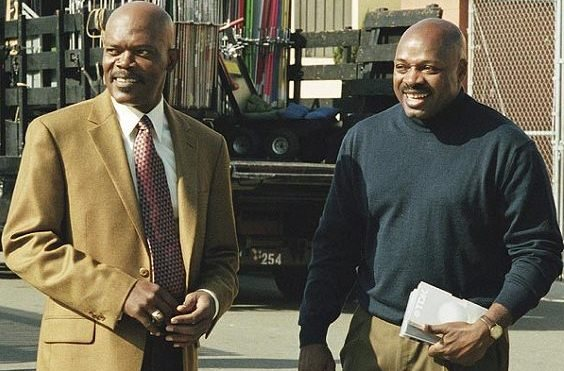

Don't takeour word for it.
Twenty-five years of national airtime, red carpets, packed arenas and lecture halls. Linked to the outlets that ran it — and to Coach's own films. Photographs courtesy of Getty Images and Coach's own collection.
since 2005
Canada
distinctions
Getty Images archive
The country
tuned in.
From the week of the lockout to today, Coach has carried the message on the biggest platforms in American media.
The company
he keeps.
From Coach's own collection
His photo albums, 2002–2006
Not found in any public record or on Coach's own sites — photo needed from Coach.


Hollywood premiere
Grauman's Chinese Theatre · January 13, 2005Dr. Phil
With Samuel L. Jackson · January 2005Hall of Famers
Premiere celebration · The HighlandPalm Springs International Film Festival
Opening-night film · January 2005On the courts
Celebrity & benefit gamesOn stage
Life Is Beautiful Festival · Las Vegas · 2015SlamBall
Head coach, the Rumble · Las Vegas · 2023Back home
Richmond High School · December 2024In December 2024, more than twenty-five years after the lockout, Coach returned to the Richmond High sideline. Local reporting in January 2026 described a handoff of the bench, with Coach preferring to help from afar. Photos of his first game back are in the Getty archive.
Editorial photographs embedded from Getty Images; © their photographers. Collection photos © Coach Ken Carter.
Review note: Getty embeds are free for editorial display; any ad or paid campaign use needs a Getty licence and the celebrity's consent. Prince, Olympic torch, Today/GMA and Best Damn Sports Show photos/clips must come from Coach.
The moments,
on film.


Coast
to coast.
Universities, business summits, trade conventions, school districts, churches and youth organizations. Hover a lit state to see where he's been.
Also: Halifax & North Preston, Nova Scotia, Canada · 2017
Boardrooms
Athene Beyond Boundaries Business Summit, presented by Chase (2026) · NAI Global Convention (2023) · Petfood Forum (2022) · ASI Show Orlando (2017) · Mississippi Economic Council (2015) · GTC West (2006)
Lecture halls
Wake Forest · Lehigh · Tennessee · Grand Valley State · Mississippi State · Baylor · Syracuse · St. Thomas · North Texas · Ball State · CSU Pueblo · Southern Illinois · Penn State Harrisburg
Gyms & sanctuaries
My Brother's Keeper, Las Vegas (2026) · Boys & Girls Clubs of Central Wyoming (2026) · Rome YMCA (2024) · Youngstown City Schools (2021) · Bay Area Rescue Mission (2023) · Life Is Beautiful (2015)
See him
work a room.
Mississippi Economic Council PowerPlay, 2015 — the full talk.

Honored for
the work.
Olympic Torchbearer
Carried the flame for Richmond and the Bay Area ahead of the Salt Lake City Winter Games.
Distinguished Secondary Educator
Recognized for excellence in secondary education.
Impact Citizen of the Year
For leadership and impact in his community.
Heroes in Education
California State Lottery award presented with Governor Gray Davis.
Mayor Willie Brown Leadership Award
Leadership honor from the City of San Francisco.
Unsung Heroes Award
Statewide recognition for service to young people.